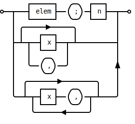

Static HTML Site Project Template - Readme
If you are reading this README file as Markdown source, consider building the
project first by running the build script Build.ps1 and then open
README.html in the browser.
Site projects allow you to build static HTML sites from Markdown sources
in a fast and simple way. Just add Markdown content to the project's markdown
directory and then run the build script to update the HTML site.
The initial configuration of the project contains all site assets locally. This allows the site to be viewed offline (without internet connection).
What Next?
The project is fully functional with the out-of-the-box configuration.
To author the HTML site following do this:
- Create Markdown files (
*.md) in themarkdowndirectory of the project. All resources linked to by Markdown content such as images or videos should also added be to this directory. Make sure to use only relative links to other markdown or media files. - Build the site by executing the build script
Build.ps1. - Locate the site's home page in the
htmldirectory and open it in the browser
For information about project structure and customization options
check out the documentation for New-StaticHTMLSiteProject:
PS> Get-Help New-StaticHTMLSiteProject -Online
Also read the module's conceptual documentation:
PS> Get-Help about_MarkdownToHTML
Finally you can browse the documentation of the MarkdownToHTML
module online.
Feature Showcase
In the following sections some selected features are of the
capabilities of MarkdownToHTML are demonstrated.
Mermaid Diagrams
Markdown extension: mermaid:
~~~ mermaid stateDiagram [*] --> Still Still --> [*] Still --> Moving Moving --> Still Moving --> Crash Crash --> [*] ~~~rendered as:
stateDiagram [*] --> Still Still --> [*] Still --> Moving Moving --> Still Moving --> Crash Crash --> [*]
LaTeX Math
Markdown extensions:
mathematics:$$ \left( \sum_{k=1}^n a_k b_k \right)^2 \leq \left( \sum_{k=1}^n a_k^2 \right) \left( \sum_{k=1}^n b_k^2 \right) $$renders as:
\[ \left( \sum_{k=1}^n a_k b_k \right)^2 \leq \left( \sum_{k=1}^n a_k^2 \right) \left( \sum_{k=1}^n b_k^2 \right) \]
Code Syntax Highlighting
Markdown extension:
common~~~ cpp #include <iostream> int main(int argc, char *argv[]) { /* An annoying "Hello World" example */ for (auto i = 0; i < 0xFFFF; i++) cout << "Hello, World!" << endl; char c = '\n'; unordered_map <string, vector<string> > m; m["key"] = "\\\\"; // this is an error return -2e3 + 12l; } ~~~renders as:
#include <iostream> int main(int argc, char *argv[]) { /* An annoying "Hello World" example */ for (auto i = 0; i < 0xFFFF; i++) cout << "Hello, World!" << endl; char c = '\n'; unordered_map <string, vector<string> > m; m["key"] = "\\\\"; // this is an error return -2e3 + 12l; }
Svgbob Plain Text Diagrams
The example below uses unicode box drawing characters to make the diagrams more readable in Markdown text.
˜˜˜ bob ┌──────┐ .─. ┌───┐ o──┬───┤ elem ├──( ; )─┤ n ├──┬──o │ └──────┘ '─' └───┘ │ │ ╭──────>──────╮ │ │ │ ┌───┐ │ │ ├─┴─┬──┤ x ├──┬─┴──────────┤ │ │ └───┘ │ │ │ │ .─. │ │ │ ╰──( , )──╯ ^ │ '─' │ │ ╭────────>─────────╮ │ │ │ ┌───┐ .-. │ │ ╰──┴─┬─┤ x ├──( , )─┬─┴────╯ │ └───┘ '-' │ ╰───────<──────╯ ˜˜˜renders as:
